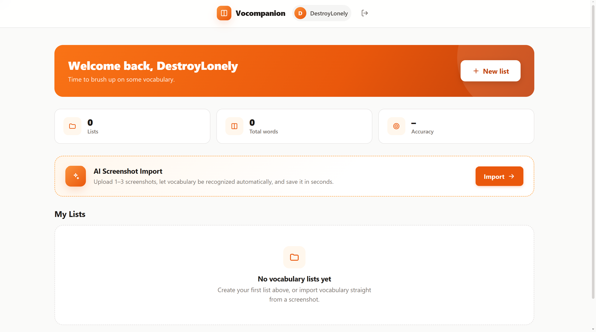
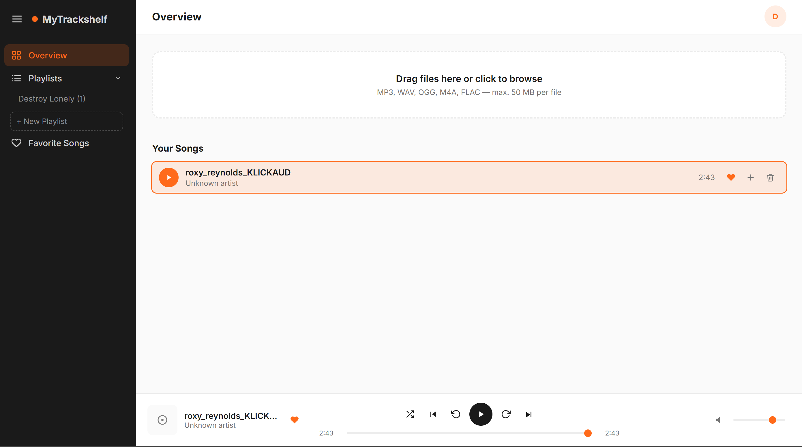
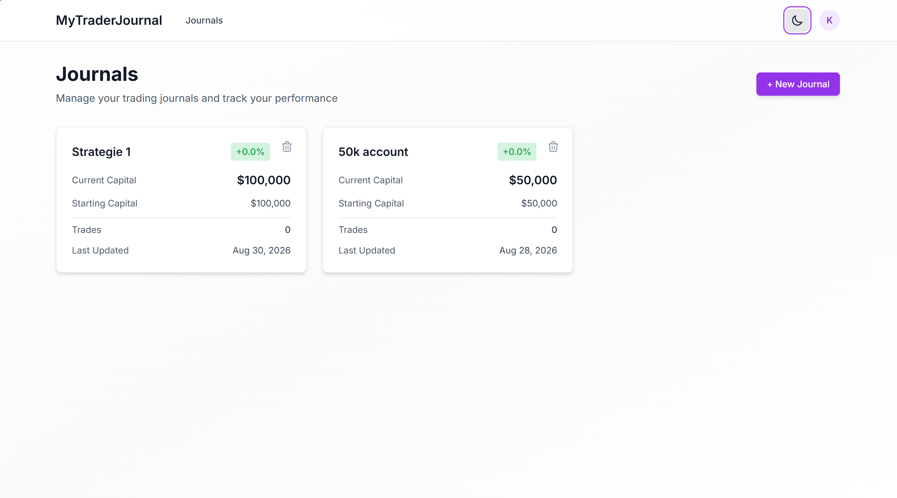

Kian Gray
Ich entwickle Web-Anwendungen von der ersten Idee bis zum fertigen Deployment. Ich bin neugierig, arbeite gern im Team und freue mich auf die nächste Herausforderung.
Ausgewählte Projekte
Drei Web-Apps, die ich vollständig selbst konzipiert, entwickelt und deployed habe.

Vocompanion
Auf der Suche nach einer kostenlosen App, mit der sich Vokabeln aus dem Lehrbuch per Foto in ein interaktives Lernset verwandeln lassen, wurde ich nicht fündig. Also habe ich Vocompanion selbst entwickelt, eine App zum Vokabellernen.

MyTrackshelf
MyTrackshelf sammelt meine heruntergeladene Musik an einem Ort und macht sie werbefrei abspielbar. Eine einfache, eigene Alternative zu Streaming-Diensten mit Werbeunterbrechungen.

MyTraderJournal
Nach mehreren Jahren aktivem Trading habe ich kein Tool gefunden, das meine Strategien und Trades zuverlässig auswertet. Also habe ich MyTraderJournal entwickelt.
Wer ich bin
Ich bin Kian, angehender Informatiker EFZ (Fachrichtung Applikationsentwicklung) an der IMS Zürich. Ich bin neugierig und entdecke gerne neue Themenbereiche. Am liebsten löse ich komplexe Probleme im Team, durch offenen Austausch, Ausprobieren und gemeinsames Weiterdenken.
Mehr über mich